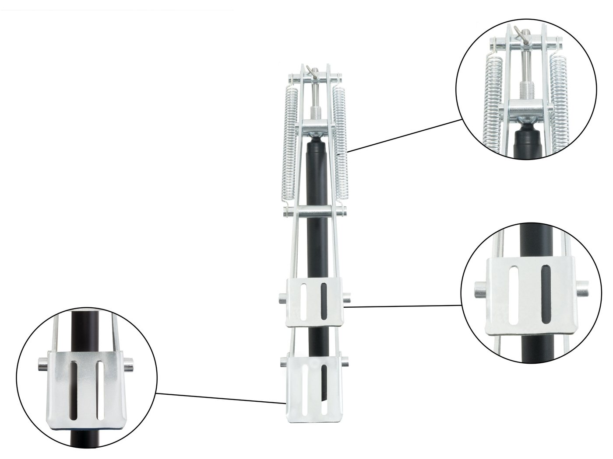
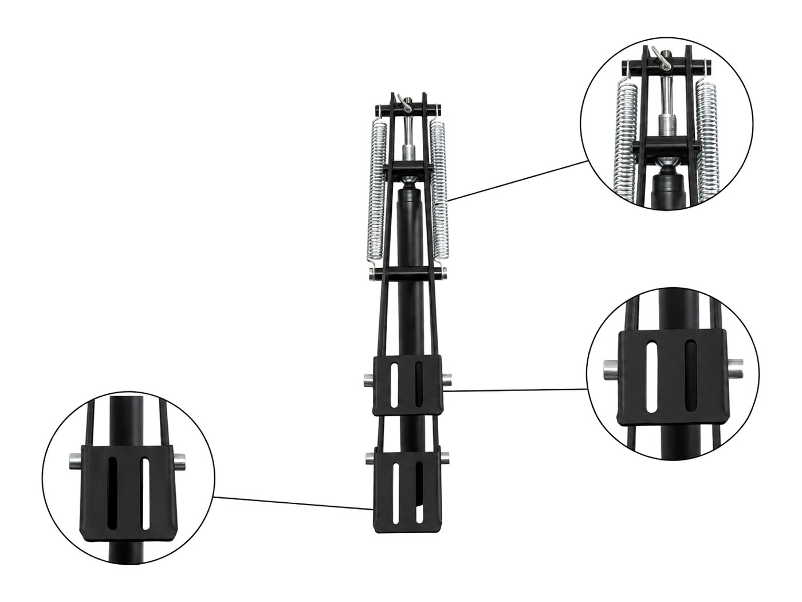
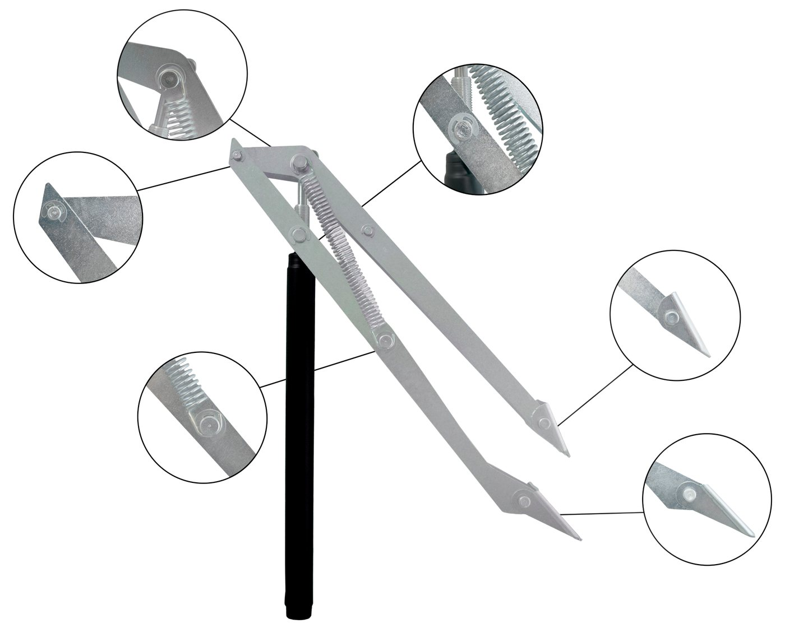
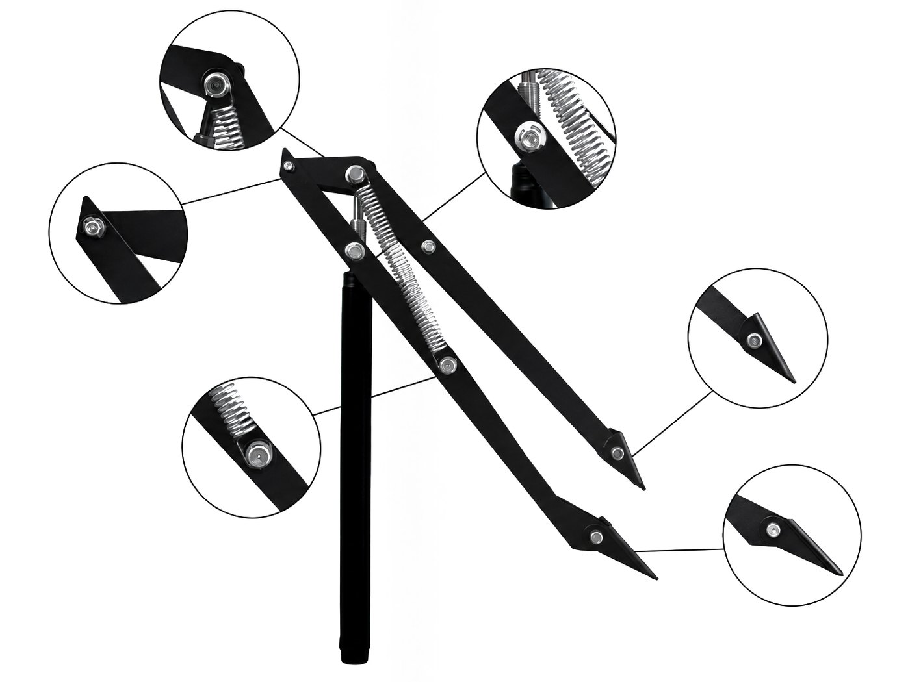
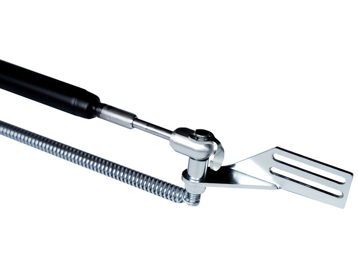
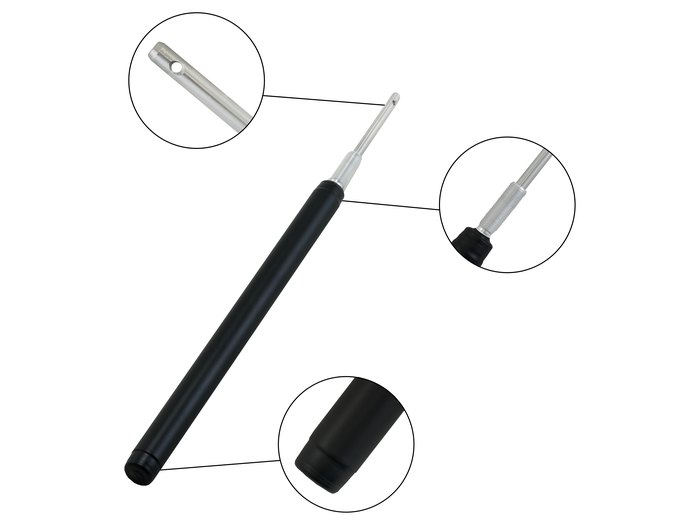

Automatski otvarač prozora
Otvarač na toplotni pogon za prozore staklenika. Bez struje, bez baterija, Easy Clip montaža za nekoliko sekundi.

Dve verzije
Isti mehanizam, iste specifikacije. Verzije se u cenovniku vode kao dva artikla.
Otvarač prozora · Cinkovani
Klasična cinkovana završna obrada.

Otvarač prozora · Crni
Crna završna obrada.
Otvarač radi na cilindar koji pokreće toplota: kako se vazduh u stakleniku zagreva, cilindar se širi i podiže prozor, a kako se hladi, prozor se zatvara. Počinje da otvara na oko 16 °C, a potpuno je otvoren na 30 °C, pa provetravanje prati temperaturu bez ičijeg angažovanja.
Dvokraki mehanizam sa oprugom daje silu podizanja do 20 kg, dovoljno za teže polikarbonatne i staklene prozore. Easy Clip sistem montira i skida otvarač za nekoliko sekundi i odgovara širokom spektru okvira.
Izrađen od cinkovanog čelika za upotrebu napolju tokom cele godine. Svaki komplet se kontroliše pre pakovanja i pokriven je garancijom proizvođača od 2 godine.
Tehničke specifikacije
| Sila podizanja | do 20 kg |
|---|---|
| Maksimalno otvaranje | 45 cm |
| Hod cilindra | 65 mm |
| Radni opseg | 16–30 °C |
| Napajanje | nema, cilindar na toplotu |
| Materijal | cinkovani čelik |
| Završna obrada | cinkovana ili crna |
| Montaža | Easy Clip, bez alata |
| Garancija | 2 godine |
Ključne karakteristike
Kreće na 16 °C, otvoren na 30 °C
Provetravanje prati temperaturu automatski.
Sila podizanja 20 kg
Nosi teže prozore sa rezervom.
Montaža za sekunde
Easy Clip fiksiranje, odgovara većini profila.
Cinkovani čelik
Otporan na koroziju, napravljen za godine napolju.
Prikaz proizvoda


Probajte pre nego što naručite.
Distributerima i proizvođačima staklenika šaljemo besplatan probni komplet. Montirajte ga, pustite ga da radi sezonu, pa onda razgovaramo o količinama i cenama direktno.
Ostali proizvodi

Automatski otvarač vrata
Jača jedinica za vrata staklenika i veće otvore. Otvara do 90° za brzo ispuštanje toplote.
Detalji
Rezervni cilindar
Univerzalni cilindar na toplotni pogon koji odgovara svakom automatskom otvaraču. Aluminijumsko telo, inox klip.
Detalji